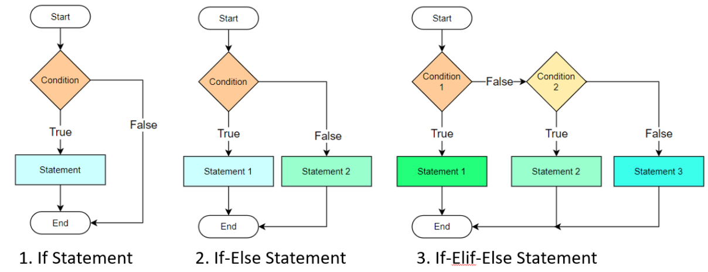
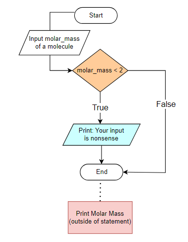
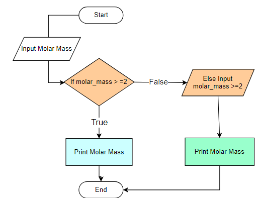
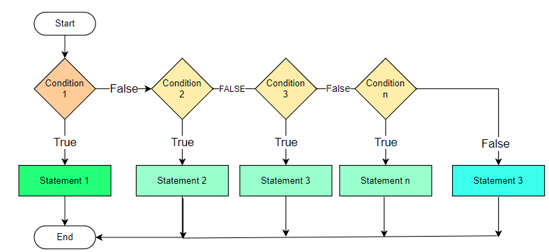
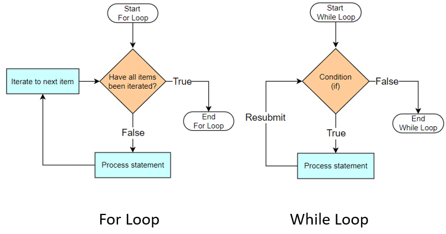

5. Logic and Control Structures#
Boolean algebra deals with binary logic - values that are True or False and is the foundation of logic and control structures that allow you to control the sequence in which statements are executed.
Control structures can generally be categorized into three main types:
Conditional (Decision-Making) Control – These structures allow the program to make choices and take different execution paths based on conditions. Examples:
ifstatementif-elsestatementif-elif-elsestatement
Iteration (Looping) Control – These structures repeat a block of code multiple times until a condition is met. Examples:
forloop (iterates over sequences)whileloop (runs based on a condition)
Branching (Jump) Control – These are statements that modify the normal flow of execution within loops or functions. Examples:
break(exits the loop)continue(skips the rest of the current iteration and moves to the next)pass(placeholder statement that does nothing)return(exits a function and optionally returns a value)
Operators that are used in logic and control structures
Category |
Operator(s) |
Description |
|---|---|---|
Comparison |
|
Equal to |
|
Not equal to |
|
|
Greater than |
|
|
Less than |
|
|
Greater than or equal to |
|
|
Less than or equal to |
|
Logical (Boolean) |
|
Returns |
|
Returns |
|
|
Negates a Boolean expression |
|
Identity |
|
Returns |
|
Returns |
|
Membership |
|
Returns |
|
Returns |
1. Conditionals#
The output of a conditional is Boolean There are three basic types of If statements
If Statement
If-else Statement
If-elif-else Statement

If Statement#
In the following example we are asking someone to input into our code the molar mass of a compound, with diatomic hydrogen being the smallest substance, and so a molar mass of less than two is nonsense and should not be accepted as valid input.

Inspect the following code cell before running. Note how python uses indented blocks to define the if statement, with the indented statement being executed if the condition is True.
Be sure to try a molar mass < 2 and read the output
#molar_mass=float(input("Enter the molar mass of a molecule in units of g/mol"))
molar_mass = 0.098
#molar_mass=float(input("Enter the molar mass of a molecule in units of g/mol"))
if molar_mass < 2.0:
print("Your molar mass makes no sense")
print(f"The molar mass you entered is: {molar_mass}g/mol")
Your molar mass makes no sense
The molar mass you entered is: 0.098g/mol
If-else Statement#
The shortcomings of the previous block of code can be overcome with an if-else statement

Inspect the following code cell before running it and not how we switched the logic so it prints the output if true
#molar_mass=float(input("Enter the molar mass of a molecule in units of g/mol"))
# molar_mass=float(input("Enter the molar mass of a molecule in units of g/mol "))
molar_mass = 4
if molar_mass >= 2.0:
print(f"The molar mass you entered is: {molar_mass}g/mol")
else:
molar_mass=float(input("Enter a molar mass greater than or equal to diatomic hydrogen "))
print(f"The molar mass you entered is: {molar_mass}g/mol")
The molar mass you entered is: 4g/mol
If-elif-else Statements#

Note how the following code cell uses a list of strings, and the first letter of each element is capitalized. After inspecting and running the code, can you alter it with a string method so it will work if you do not capitalize the first letter (you can do this on the first line of code).
element = input("Enter the element you want to know the family of: ")
element="Silicon"
#element = input("Enter the element you want to know the family of: ")
if element == "Hydrogen":
print("Hydrogen belongs to the nonmetal family.")
elif element in ["Lithium", "Sodium", "Potassium", "Rubidium", "Cesium", "Francium"]:
print(f"{element} belongs to the alkali metal family.")
elif element in ["Beryllium", "Magnesium", "Calcium", "Strontium", "Barium", "Radium"]:
print(f"{element} belongs to the alkaline earth metal family.")
elif element in ["Boron", "Aluminum", "Gallium", "Indium", "Thallium"]:
print(f"{element} belongs to the metalloid family.")
elif element in ["Carbon", "Silicon", "Germanium", "Tin", "Lead"]:
print(f"{element} belongs to the nonmetal family.")
elif element in ["Nitrogen", "Phosphorus", "Arsenic", "Antimony", "Bismuth"]:
print(f"{element} belongs to the pnictogen family.")
elif element in ["Oxygen", "Sulfur", "Selenium", "Tellurium", "Polonium"]:
print(f"{element} belongs to the chalcogen family.")
elif element in ["Fluorine", "Chlorine", "Bromine", "Iodine", "Astatine"]:
print(f"{element} belongs to the halogen family.")
elif element in ["Helium", "Neon", "Argon", "Krypton", "Xenon", "Radon"]:
print(f"{element} belongs to the noble gas family.")
elif element in ["Cerium", "Praseodymium", "Neodymium", "Promethium", "Samarium",
"Europium", "Gadolinium", "Terbium", "Dysprosium", "Holmium",
"Erbium", "Thulium", "Ytterbium", "Lutetium"]:
print(f'{element} is a lanthanide')
elif element in ["Thorium", "Protactinium", "Uranium", "Neptunium", "Plutonium",
"Americium", "Curium", "Berkelium", "Californium", "Einsteinium",
"Fermium", "Mendelevium", "Nobelium", "Lawrencium", "Rutherfordium",
"Dubnium", "Seaborgium", "Bohrium", "Hassium", "Meitnerium", "Darmstadtium",
"Roentgenium", "Copernicium", "Nihonium", "Flerovium", "Moscovium", "Livermorium", "Tennessine", "Oganesson"]:
print(f'{element} is an actinide')
else:
print(f'element is a transition metal')
Silicon belongs to the nonmetal family.
Compound if-elif Statements#
AND Conjunction#
Type |
ΔH |
ΔS |
ΔG |
Spontaneity Condition |
|---|---|---|---|---|
1 |
[+] |
[-] |
Always [+] |
Never spontaneous |
2 |
[-] |
[-] |
[-] at low T |
Enthalpy-driven process, only spontaneous at low T |
3 |
[+] |
[+] |
[-] at high T |
Entropy-driven process, only spontaneous at high T |
4 |
[-] |
[+] |
Always [-] |
Spontaneous at all T, both enthalpy and entropy driven |
enthalpy=float(input("Enter a reaction enthalpy in units of kJ and include the sign: "))
entropy=float(input("Enter a reaction entropy in units of j/K and include the sign: "))
#Temperature and reaction spontaneity
enthalpy = -4
entropy = -34
#enthalpy=float(input("Enter a reaction enthalpy in units of kJ and include the sign: "))
#entropy=float(input("Enter a reaction entropy in units of j/K and include the sign: "))
if enthalpy > 0 and entropy < 0:
print(f"A reaction with enthalpy = {enthalpy} kJ and entropy = {entropy} J/K is never spontaneous")
elif enthalpy > 0 and entropy > 0:
print(f"A reaction with enthalpy = {enthalpy} kJ and entropy = {entropy} J/K is entropy driven and spontaneous at high T")
elif enthalpy < 0 and entropy < 0:
print(f"A reaction with enthalpy = {enthalpy} kJ and entropy = {entropy} J/K is enthalpy driven and spontaneous at low T")
else:
print(f"A reaction with enthalpy = {enthalpy} kJ and entropy = {entropy} J/K is enthalpy and entropy driven and spontaneous at all T")
A reaction with enthalpy = -4 kJ and entropy = -34 J/K is enthalpy driven and spontaneous at low T
OR Conjunction#
#atom=input("Enter name of element: ").capitalize()
#is an element an alkaline earth metal?
atom = "barium"
#atom=input("Enter name of element: ").capitalize()
atom=atom.capitalize()
if atom == "Beryllium" or atom == "Magnesium" or atom == "Calcium" or \
atom == "Barium" or atom == "Strontium" or atom == "Radium":
print(f"{atom} is an alkaline earth metal")
else:
print(f"{atom} is not an alkaline earth metal")
Barium is an alkaline earth metal
Nested if Statements#
#melting_point=float(input("What is the melting point of your substance? "))
#boiling_point=float(input("What is the boiling point of your substance? "))
#temperature=float(input("What is the temperature you wish to know the phase at? "))
#What is the phase of a substance?
melting_point,boiling_point,temperature = 0.0, 100.0, 45.0
#melting_point=float(input("What is the melting point of your substance? "))
#boiling_point=float(input("What is the boiling point of your substance? "))
#temperature=float(input("What is the temperature you wish to know the phase at? "))
if temperature <= melting_point:
if temperature == melting_point:
print(f"It is at the melting point, could be solid, liquid or both coexisting together")
else :
print(f"It is a solid")
elif temperature > melting_point and temperature < boiling_point:
print(f"Substance is a liquid")
else :
if temperature == boiling_point:
print(f"It is at the boiling point and could be liquid, gas or both")
else:
print(f"It is a gas")
Substance is a liquid
Try-Except Error Handling#
What if your input is not a number? Then the code can not convert it to a float and an error will return (run the above cell but type a value like ten, not 10). We can input the entire code block of the nested if statement in a try block, followed by the except ValueError for non-numeric input, as in the following code cell.
#melting_point = float(input("What is the melting point of your substance? "))
#boiling_point = float(input("What is the boiling point of your substance? "))
#temperature = float(input("What is the temperature you wish to know the phase at? "))
melting_point,boiling_point,temperature = 0.0, 100.0, float("ten")
#What is the phase of a substance?
try:
melting_point,boiling_point,temperature = 0.0, 100.0, float("ten")
#melting_point = float(input("What is the melting point of your substance? "))
#boiling_point = float(input("What is the boiling point of your substance? "))
#temperature = float(input("What is the temperature you wish to know the phase at? "))
if temperature <= melting_point:
if temperature == melting_point:
print("It is at the melting point, could be solid, liquid, or both coexisting together")
else:
print("It is a solid")
elif melting_point < temperature < boiling_point:
print("Substance is a liquid")
else:
if temperature == boiling_point:
print("It is at the boiling point and could be liquid, gas, or both")
else:
print("It is a gas")
except ValueError:
print("Error: Please enter numeric values for all inputs.")
Error: Please enter numeric values for all inputs.
Logical Validation#
The above error was a type error in the sense that non-numeric input was given. But what if the numeric value of the melting point is higher than the boiling point? This would be nonsense, and we could use a boolean if to terminate the code. To do this we need to use the built-in sys module. Note, this gives us an error message. In the next section we will learn how to use loops, and how a while True: loop is a better way to do this.
import sys # Import sys module for exiting the script
# What is the phase of a substance?
try:
melting_point = float(input("What is the melting point of your substance? "))
boiling_point = float(input("What is the boiling point of your substance? "))
if melting_point > boiling_point:
print("Error: The boiling point must be greater than or equal to the melting point.")
sys.exit() # Terminates the script if MP > BP
temperature = float(input("What is the temperature you wish to know the phase at? "))
if temperature <= melting_point:
if temperature == melting_point:
print("It is at the melting point, could be solid, liquid, or both coexisting together")
else:
print("It is a solid")
elif melting_point < temperature < boiling_point:
print("Substance is a liquid")
else:
if temperature == boiling_point:
print("It is at the boiling point and could be liquid, gas, or both")
else:
print("It is a gas")
except ValueError:
print("Error: Please enter numeric values for all inputs.")
2. Loops#
A loop structure is a programming construct that allows you to repeat a block of code until a terminating condition is met. There are two basic type of loop structures in Python, the “for” loop and the “while” loop. The basic difference between them is how they are terminated. In the for loop the code is repeated for a certain number of times, while in a while loop it is repeated while a condition is true. We will look at each of these in turn.

For Loops#
There are two basic types of for loops, data-driven (iterable containers like strings, lists, dictionaries) and count-controlled (numeric iterations over a range).
Data-driven loops iterate over stored data (which could come from an experiment, a database, a CSV file, etc.).
Numeric iteration generates values on demand, often used in simulations, modeling, and algorithmic processing.
Iteration over Containers#
The following is a list of the names of the elements in the periodic table
element_list = ['Hydrogen', 'Helium', 'Lithium', 'Beryllium', 'Boron', 'Carbon', 'Nitrogen', 'Oxygen', 'Fluorine', \
'Neon', 'Sodium', 'Magnesium', 'Aluminium', 'Silicon', 'Phosphorus', 'Sulfur', 'Chlorine', 'Argon', \
'Potassium', 'Calcium', 'Scandium', 'Titanium', 'Vanadium', 'Chromium', 'Manganese', 'Iron', 'Cobalt',
'Nickel', 'Copper', 'Zinc', 'Gallium', 'Germanium', 'Arsenic', 'Selenium', 'Bromine', 'Krypton', 'Rubidium', \
'Strontium', 'Yttrium', 'Zirconium', 'Niobium', 'Molybdenum', 'Technetium', 'Ruthenium', 'Rhodium', \
'Palladium', 'Silver', 'Cadmium', 'Indium', 'Tin', 'Antimony', 'Tellurium', 'Iodine', 'Xenon', 'Caesium', \
'Barium', 'Lanthanum', 'Cerium', 'Praseodymium', 'Neodymium', 'Promethium', 'Samarium', 'Europium', \
'Gadolinium', 'Terbium', 'Dysprosium', 'Holmium', 'Erbium', 'Thulium', 'Ytterbium', 'Lutetium', 'Hafnium', \
'Tantalum', 'Tungsten', 'Rhenium', 'Osmium', 'Iridium', 'Platinum', 'Gold', 'Mercury', 'Thallium', 'Lead', \
'Bismuth', 'Polonium', 'Astatine', 'Radon', 'Francium', 'Radium', 'Actinium', 'Thorium', 'Protactinium', \
'Uranium', 'Neptunium', 'Plutonium', 'Americium', 'Curium', 'Berkelium', 'Californium', 'Einsteinium', \
'Fermium', 'Mendelevium', 'Nobelium', 'Lawrencium', 'Rutherfordium', 'Dubnium', 'Seaborgium', 'Bohrium', \
'Hassium', 'Meitnerium', 'Darmstadtium', 'Roentgenium', 'Copernicium', 'Nihonium', 'Flerovium', 'Moscovium', \
'Livermorium', 'Tennessine', 'Oganesson']
print(element_list)
print(type(element_list))
['Hydrogen', 'Helium', 'Lithium', 'Beryllium', 'Boron', 'Carbon', 'Nitrogen', 'Oxygen', 'Fluorine', 'Neon', 'Sodium', 'Magnesium', 'Aluminium', 'Silicon', 'Phosphorus', 'Sulfur', 'Chlorine', 'Argon', 'Potassium', 'Calcium', 'Scandium', 'Titanium', 'Vanadium', 'Chromium', 'Manganese', 'Iron', 'Cobalt', 'Nickel', 'Copper', 'Zinc', 'Gallium', 'Germanium', 'Arsenic', 'Selenium', 'Bromine', 'Krypton', 'Rubidium', 'Strontium', 'Yttrium', 'Zirconium', 'Niobium', 'Molybdenum', 'Technetium', 'Ruthenium', 'Rhodium', 'Palladium', 'Silver', 'Cadmium', 'Indium', 'Tin', 'Antimony', 'Tellurium', 'Iodine', 'Xenon', 'Caesium', 'Barium', 'Lanthanum', 'Cerium', 'Praseodymium', 'Neodymium', 'Promethium', 'Samarium', 'Europium', 'Gadolinium', 'Terbium', 'Dysprosium', 'Holmium', 'Erbium', 'Thulium', 'Ytterbium', 'Lutetium', 'Hafnium', 'Tantalum', 'Tungsten', 'Rhenium', 'Osmium', 'Iridium', 'Platinum', 'Gold', 'Mercury', 'Thallium', 'Lead', 'Bismuth', 'Polonium', 'Astatine', 'Radon', 'Francium', 'Radium', 'Actinium', 'Thorium', 'Protactinium', 'Uranium', 'Neptunium', 'Plutonium', 'Americium', 'Curium', 'Berkelium', 'Californium', 'Einsteinium', 'Fermium', 'Mendelevium', 'Nobelium', 'Lawrencium', 'Rutherfordium', 'Dubnium', 'Seaborgium', 'Bohrium', 'Hassium', 'Meitnerium', 'Darmstadtium', 'Roentgenium', 'Copernicium', 'Nihonium', 'Flerovium', 'Moscovium', 'Livermorium', 'Tennessine', 'Oganesson']
<class 'list'>
for element in element_list:
print(element)
print(f'\n \n The variable element_list is of class {type(element_list)},.\n \
The variable element is of class {type(element)}. ')
Hydrogen
Helium
Lithium
Beryllium
Boron
Carbon
Nitrogen
Oxygen
Fluorine
Neon
Sodium
Magnesium
Aluminium
Silicon
Phosphorus
Sulfur
Chlorine
Argon
Potassium
Calcium
Scandium
Titanium
Vanadium
Chromium
Manganese
Iron
Cobalt
Nickel
Copper
Zinc
Gallium
Germanium
Arsenic
Selenium
Bromine
Krypton
Rubidium
Strontium
Yttrium
Zirconium
Niobium
Molybdenum
Technetium
Ruthenium
Rhodium
Palladium
Silver
Cadmium
Indium
Tin
Antimony
Tellurium
Iodine
Xenon
Caesium
Barium
Lanthanum
Cerium
Praseodymium
Neodymium
Promethium
Samarium
Europium
Gadolinium
Terbium
Dysprosium
Holmium
Erbium
Thulium
Ytterbium
Lutetium
Hafnium
Tantalum
Tungsten
Rhenium
Osmium
Iridium
Platinum
Gold
Mercury
Thallium
Lead
Bismuth
Polonium
Astatine
Radon
Francium
Radium
Actinium
Thorium
Protactinium
Uranium
Neptunium
Plutonium
Americium
Curium
Berkelium
Californium
Einsteinium
Fermium
Mendelevium
Nobelium
Lawrencium
Rutherfordium
Dubnium
Seaborgium
Bohrium
Hassium
Meitnerium
Darmstadtium
Roentgenium
Copernicium
Nihonium
Flerovium
Moscovium
Livermorium
Tennessine
Oganesson
The variable element_list is of class <class 'list'>,.
The variable element is of class <class 'str'>.
# To type on one line:
for element in element_list:
print(element, end=', ')
Hydrogen, Helium, Lithium, Beryllium, Boron, Carbon, Nitrogen, Oxygen, Fluorine, Neon, Sodium, Magnesium, Aluminium, Silicon, Phosphorus, Sulfur, Chlorine, Argon, Potassium, Calcium, Scandium, Titanium, Vanadium, Chromium, Manganese, Iron, Cobalt, Nickel, Copper, Zinc, Gallium, Germanium, Arsenic, Selenium, Bromine, Krypton, Rubidium, Strontium, Yttrium, Zirconium, Niobium, Molybdenum, Technetium, Ruthenium, Rhodium, Palladium, Silver, Cadmium, Indium, Tin, Antimony, Tellurium, Iodine, Xenon, Caesium, Barium, Lanthanum, Cerium, Praseodymium, Neodymium, Promethium, Samarium, Europium, Gadolinium, Terbium, Dysprosium, Holmium, Erbium, Thulium, Ytterbium, Lutetium, Hafnium, Tantalum, Tungsten, Rhenium, Osmium, Iridium, Platinum, Gold, Mercury, Thallium, Lead, Bismuth, Polonium, Astatine, Radon, Francium, Radium, Actinium, Thorium, Protactinium, Uranium, Neptunium, Plutonium, Americium, Curium, Berkelium, Californium, Einsteinium, Fermium, Mendelevium, Nobelium, Lawrencium, Rutherfordium, Dubnium, Seaborgium, Bohrium, Hassium, Meitnerium, Darmstadtium, Roentgenium, Copernicium, Nihonium, Flerovium, Moscovium, Livermorium, Tennessine, Oganesson,
Modulus 2 division - Boolean Logic in for loops#
If you take the modulus of two you get two values, zero and one. Look at the following code, and note that zero is Boolean False and one is Boolean True
list1 = [1,2,3,4,5,6,7,8,9,10]
for num in list1:
print(f'{num} is even') if not num % 2 else print(f'{num} is odd')
1 is odd
2 is even
3 is odd
4 is even
5 is odd
6 is even
7 is odd
8 is even
9 is odd
10 is even
list1 = [1,2,3,4,5,6,7,8,9,10]
even_numbers = []
odd_numbers = []
for num in list1:
if num % 2 == 0:
even_numbers.append(num)
else:
odd_numbers.append(num)
print("Even numbers:", even_numbers)
print("Odd numbers:", odd_numbers)
Even numbers: [2, 4, 6, 8, 10]
Odd numbers: [1, 3, 5, 7, 9]
Note, we when we get to Numpy we will learn how to use Boolean masks, which are much more efficient on large data sets than for loops.
Numeric Iteration#
Range(start, stop, increment) function#
Python provides the built-in range function that that takes three arguments. The default start is zero and the default increment is one. The stop is exclusive (up to)
for num in range(5):
print(num)
0
1
2
3
4
for num in range(1,5,2):
print(num)
1
3
The range function does not operate on containers. In the following code it is generating index numbers based on the number of items in a list, and using the index number to obtain the values of those numbers
halogens = ["F", "Cl", "Br", "I", "At"]
# Using range() to iterate with indices
for i in range(len(halogens)):
print(f"Element {i + 1} index={i}: {halogens[i]}")
Element 1 index=0: F
Element 2 index=1: Cl
Element 3 index=2: Br
Element 4 index=3: I
Element 5 index=4: At
Shorthand Operators - Augmented Assignment#
Operator |
Equivalent to |
|---|---|
|
|
|
|
|
|
|
|
|
|
|
|
total = 0
for i in range(1, 6):
total += i # Adds each number to total
print(total) # 1 + 2 + 3 + 4 + 5 = 15
15
Random Module#
The random module creates a series of numbers. If you use random.seed() you can repeat the same sequence of numbers. We will cover the built-in random module now, but later we will dive into the numpy.random() submodule that is more robust
import random
# Set seed for reproducibility
random.seed(42)
# Generate 10 random floats between 0 and 100, rounded to 2 decimal places
random_floats = [round(random.uniform(0.01, 99.99), 2) for _ in range(10)]
# Print the generated list
print(random_floats)
[63.94, 2.51, 27.51, 22.33, 73.64, 67.67, 89.21, 8.7, 42.19, 2.99]
print(random_floats)
[63.94, 2.51, 27.51, 22.33, 73.64, 67.67, 89.21, 8.7, 42.19, 2.99]
While Loops#
A while loop explicitly depends on a Boolean Expression to terminate. That is, it runs as long as the expression is True
temperature = 50 # Start temperature
boiling_point = 100
while temperature < boiling_point: # Boolean condition
print(f"Temperature: {temperature}°C - Not boiling yet.")
temperature += 10 # Increase temperature
print("Boiling point reached!")
Temperature: 50°C - Not boiling yet.
Temperature: 60°C - Not boiling yet.
Temperature: 70°C - Not boiling yet.
Temperature: 80°C - Not boiling yet.
Temperature: 90°C - Not boiling yet.
Boiling point reached!
In the section on for loops we created a script that determined the phase of a compound at a temperature if the use inserted the melting and boiling points. We used the sys.exit() function to handle the logic error of the melting point being larger than the boiling point, which worked, but kicked off an error message. We can now put use this with a while loop and a break control statement. Note, that this script will continue to ask for the boiling and melting points until you provide ones that make sense.
#What is the phase of a substance?
try:
while True:
melting_point = float(input("What is the melting point of your substance? "))
boiling_point = float(input("What is the boiling point of your substance? "))
if melting_point <= boiling_point:
break
else:
print("Your melting point is greater than the boiling point")
print("re-enter both values")
temperature = float(input("What is the temperature you wish to know the phase at? "))
if temperature <= melting_point:
if temperature == melting_point:
print("It is at the melting point, could be solid, liquid, or both coexisting together")
else:
print("It is a solid")
elif melting_point < temperature < boiling_point:
print("Substance is a liquid")
else:
if temperature == boiling_point:
print("It is at the boiling point and could be liquid, gas, or both")
else:
print("It is a gas")
except ValueError:
print("Error: Please enter numeric values for all inputs.")
#3 Branching (Jump) Control
Jump (Control) Structures#
These are structures that let you jump out of a loop or process based on a condition. They are useful in handling errors.
break#
exits nearest enclosing loop
elements = ["H", "He", "Li", "Be", "B"]
for element in elements:
if element in {"Li", "Be", "Mg"}: # Boolean condition
print(f"{element} is a metal. Stopping search.")
break # Exits loop early
print(f"{element} is not a metal.")
H is not a metal.
He is not a metal.
Li is a metal. Stopping search.
Continue#
elements = ["Na", "Cl", "K", "Br", "Ca", "I"]
for element in elements:
if element not in {"Na", "K", "Ca"}: # Boolean condition
continue # Skip to the next iteration
print(f"{element} is a metal.")
Na is a metal.
K is a metal.
Ca is a metal.
pass#
placeholder, useful while developing code
pH = 7
if pH < 7:
print("Acidic solution")
elif pH > 7:
print("Basic solution")
else:
pass # Placeholder for future neutral pH case
try/except block#
This is not really a jump type command, but it gives an alternative procedure if a condition occurs. For example, you could divide by x except if x = zero, or do a mathematical calculation unless the input value is not numerical. That is “10” and ten, are not numerical values but strings.
try:
something
except:
something
try:
temperature = float(input("Enter the temperature in Celsius: "))
except ValueError:
print("Invalid input. Please enter a numerical temperature.")
exit()
return#
This exits a function and returns a value, which is often assigned to a variable.
4. Comprehensions#
List Comprehensions#
A list comprehension is an iterative way to create a new list from an existing data container. They are often more concise than for loops and are useful for filtering data
Mathematical Origins: Set-Builder Notation In mathematics, a set comprehension is a way of defining sets using a condition or transformation. It follows this notation:
Which means:
“S is the set of all \(( x^2 )\) where \(( x )\) is a natural number and \( x < 5 \).”
For example, this would result in:
\( S = \{ 0, 1, 4, 9, 16 \} \)
Python adopted this idea to create list comprehensions in a way that expresses “building a new list” in a single readable statement.
Basic Structure:#
new_list = [expression for item in iterable]
expression→ Defines how each element should be transformed.item→ Represents each element fromiterable.iterable→ Any container that can be looped over (list, tuple, set, dictionary keys/values, etc.).
Temperature Conversion: For Loop vs. List Comprehension#
In the following we will first convert T Fahrenheit to Celsius, and then use a list comprehension
# Using a For Loop
temps_f = [32, 50, 77, 104] # Fahrenheit temperatures
temps_c = [] # Empty list for Celsius
for temp in temps_f:
celsius = (temp - 32) * 5/9 # Convert to Celsius
temps_c.append(celsius) # Append result to list
print(temps_c) # Output: [0.0, 10.0, 25.0, 40.0]
[0.0, 10.0, 25.0, 40.0]
# Using a list comprehension
temps_f = [32, 50, 77, 104]
temps_c = [(temp - 32) * 5/9 for temp in temps_f]
print(temps_c) # Output: [0.0, 10.0, 25.0, 40.0]
[0.0, 10.0, 25.0, 40.0]
Convert Tuple to list#
temps_tuple = (32, 50, 77, 104)
temps_c = [(temp - 32) * 5/9 for temp in temps_tuple] # Creates a list from a tuple
print(temps_c)
[0.0, 10.0, 25.0, 40.0]
Extract Keys from a Dictionary#
element_atomic_numbers = {"H": 1, "He": 2, "Li": 3}
elements = [key for key in element_atomic_numbers] # Extracts keys as a list
print(elements) # Output: ['H', 'He', 'Li']
['H', 'He', 'Li']
Create a Set with Unique Values#
temps_f = [32, 50, 77, 104, 50] # Contains duplicate 50
temps_c_set = {(temp - 32) * 5/9 for temp in temps_f} # Creates a set (no duplicates)
print(temps_c_set) # Output: {0.0, 10.0, 25.0, 40.0}
{0.0, 25.0, 10.0, 40.0}
Filtering#
Filter out bad temperature values
temps_f = [32, -100, 50, 77, None, 104, "error"]
temps_c = [(temp - 32) * 5/9 for temp in temps_f if isinstance(temp, (int, float))]
print(temps_c) # Ignores None and "error"
[0.0, -73.33333333333333, 10.0, 25.0, 40.0]
if-else in list comprehension#
Conditional Classification
temps_f = [32, 50, 77, 104]
categories = ["Hot" if temp > 75 else "Cold" for temp in temps_f]
print(categories) # Output: ['Cold', 'Cold', 'Hot', 'Hot']
['Cold', 'Cold', 'Hot', 'Hot']
Acknowledgements#
This content was developed with assistance from Perplexity AI and Chat GPT. Multiple queries were made during the Fall 2024 and the Spring 2025.